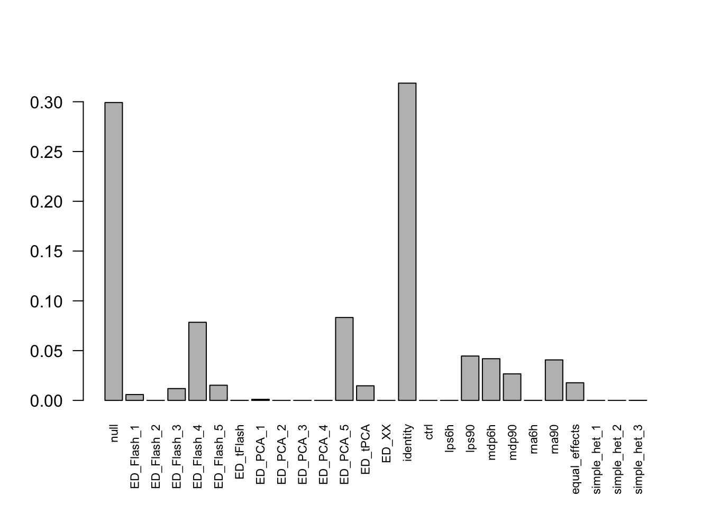
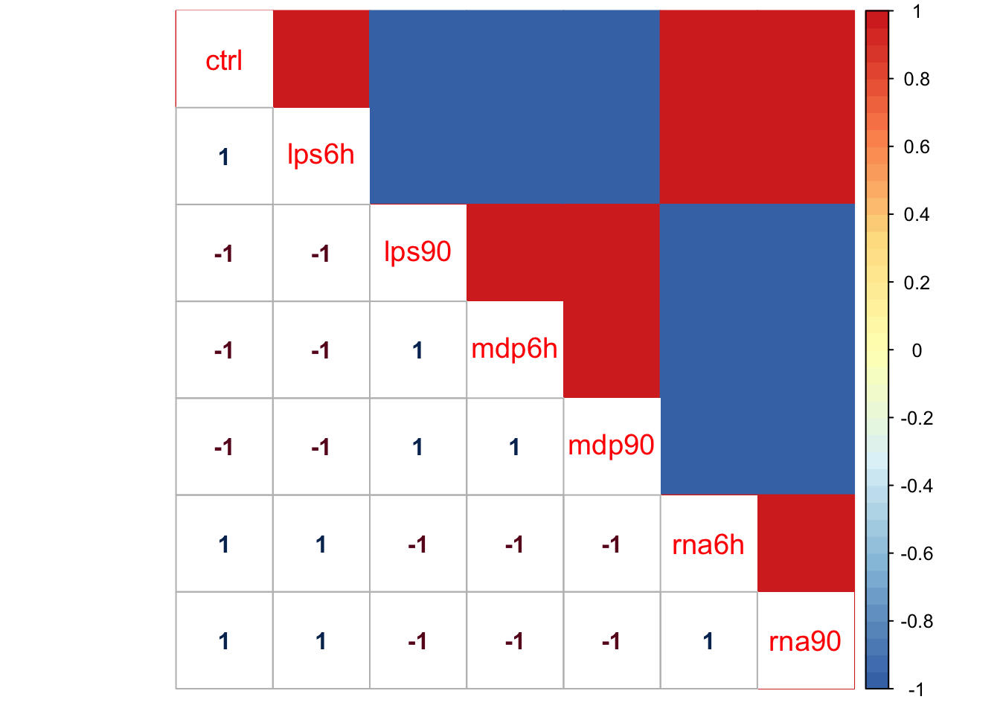
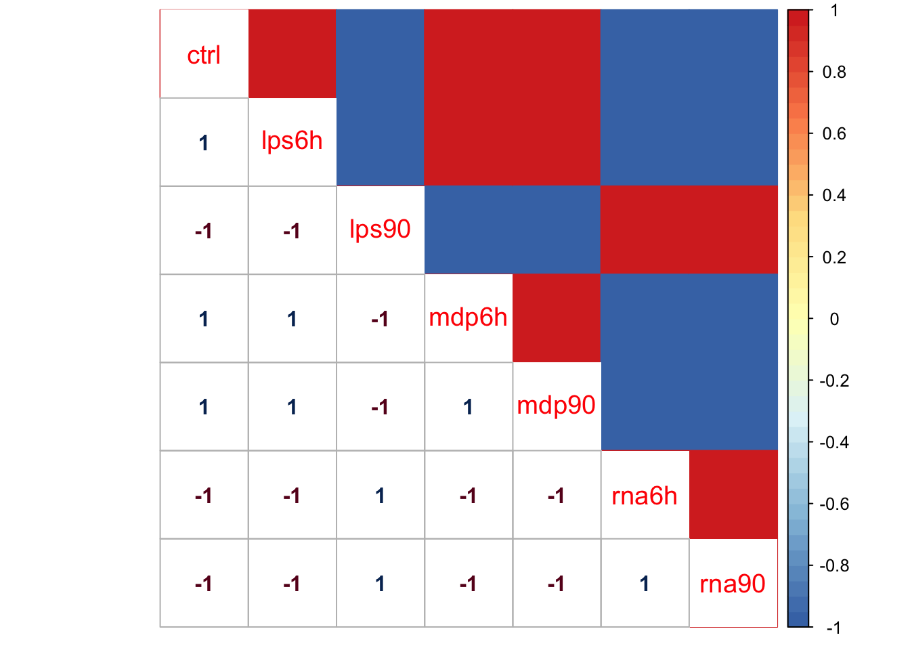
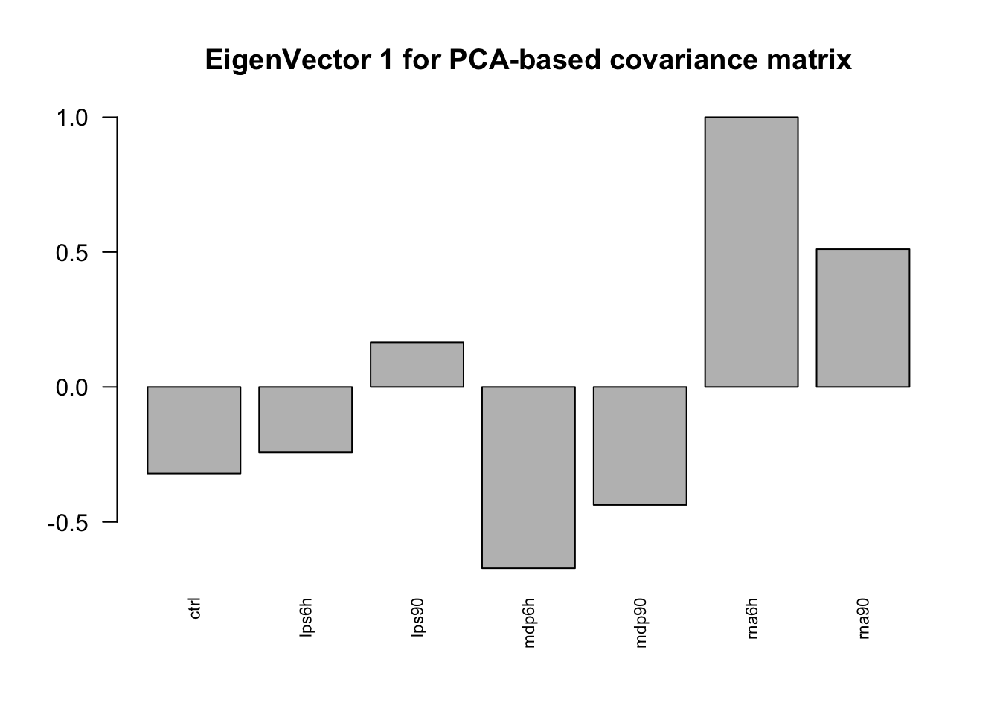
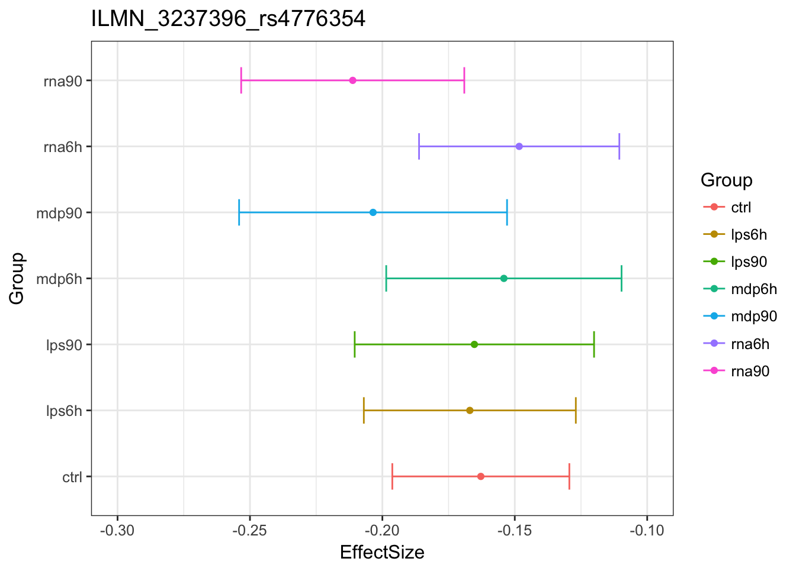
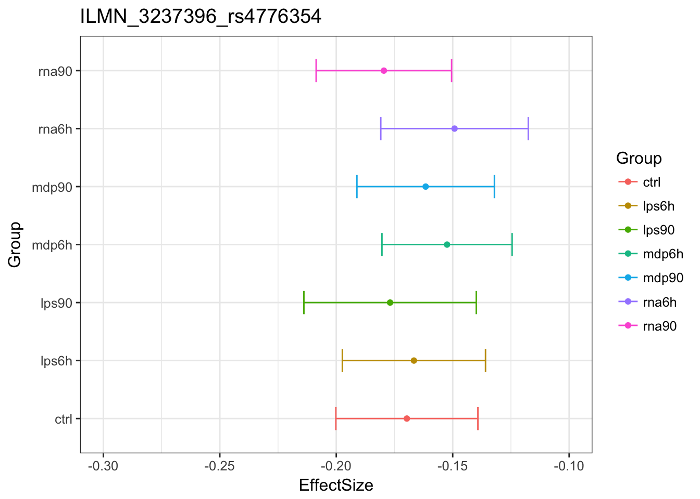
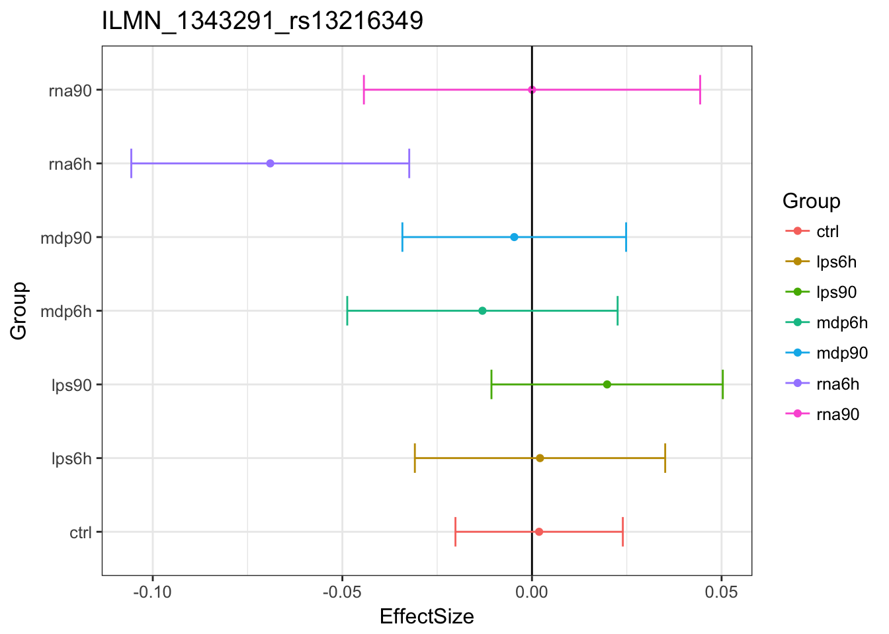
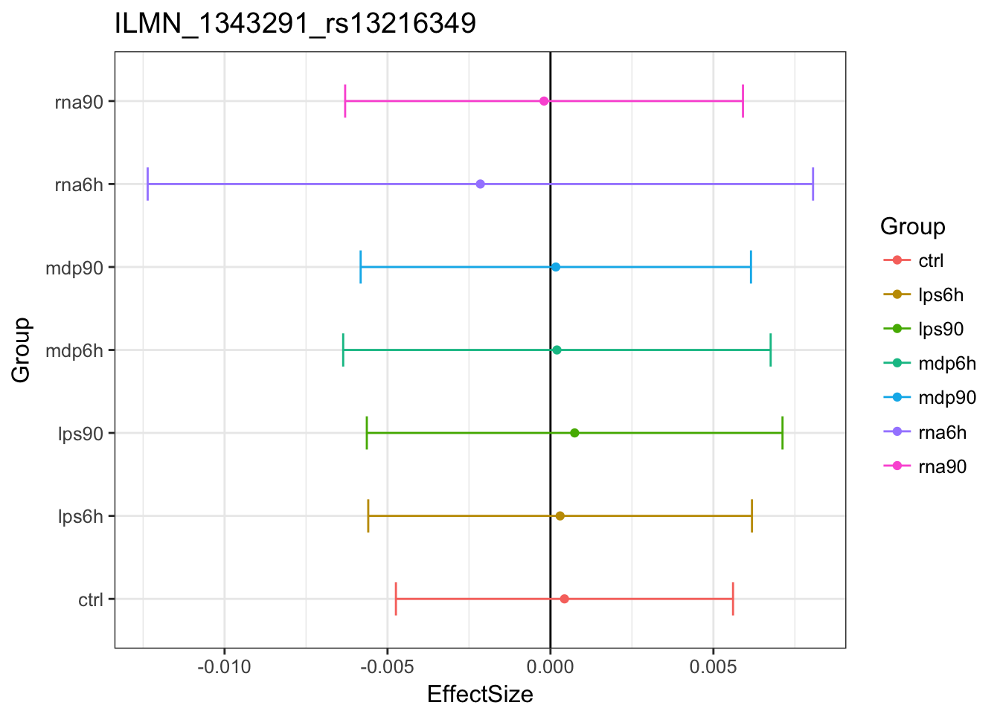
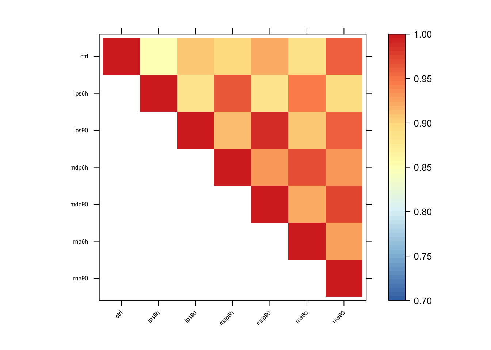

Warning in as.POSIXlt.POSIXct(Sys.time()): unknown timezone 'zone/tz/2017c.
1.0/zoneinfo/America/Chicago'Last updated: 2017-11-17
Code version: 1795163
library(lattice)
library(ggplot2)
library(colorRamps)
library(mashr)Loading required package: ashrlibrary(corrplot)corrplot 0.84 loadeddata = readRDS('../data/ImmuneQTLSummary.4MASH.rds')
data$max$se = data$max$beta/data$max$z
data$null$se = data$null$beta / data$null$z
K = 10
P = 5
vhat = 1if (vhat == 1) {
V = cor(data$null$z[which(apply(abs(data$null$z),1, max) < 2),])
} else {
V = diag(ncol(data$null$z))
}
mash_data = mashr::set_mash_data(Bhat = as.matrix(data$max$beta),
Shat = as.matrix(data$max$se),
V = as.matrix(V),
alpha = 0)# EE
resEE = readRDS('../output/ImmuneEE.V1.center.mash_model.K10.P5.rds')
resEE$result = readRDS('../output/ImmuneEE.V1.center.mash_posterior.K10.P5.rds')The log-likelihood of fit is
get_loglik(resEE)[1] 3197375Here is a plot of weights learned.
options(repr.plot.width=12, repr.plot.height=4)
barplot(get_estimated_pi(resEE), las = 2, cex.names = 0.7)
Here is a visualization for Flash4, which capture 7.8469% mixture component in these data, (via correlation heatmap):
x <- cov2cor(resEE$fitted_g$Ulist[["ED_Flash_4"]])
x[x > 1] <- 1
x[x < -1] <- -1
colnames(x) <- colnames(get_lfsr(resEE))
rownames(x) <- colnames(x)
corrplot.mixed(x, tl.pos="d",upper='color',cl.lim=c(-1,1), upper.col=colorRampPalette(rev(c("#D73027","#FC8D59","#FEE090","#FFFFBF",
"#E0F3F8","#91BFDB","#4575B4")))(40),
tl.cex=1.2)
Here is a visualization for PCA5, which capture 8.3267691% mixture component in these data, (via correlation heatmap):
x <- cov2cor(resEE$fitted_g$Ulist[["ED_PCA_5"]])
x[x > 1] <- 1
x[x < -1] <- -1
colnames(x) <- colnames(get_lfsr(resEE))
rownames(x) <- colnames(x)
corrplot.mixed(x, tl.pos="d",upper='color',cl.lim=c(-1,1), upper.col=colorRampPalette(rev(c("#D73027","#FC8D59","#FEE090","#FFFFBF",
"#E0F3F8","#91BFDB","#4575B4")))(40),
tl.cex=1.2)
Next we perform SVD on the PCA 5 based covariance matrix, and plot the top eigen vector.
svd.out = svd(resEE$fitted_g$Ulist[["ED_PCA_5"]])
v = svd.out$v
colnames(v) = colnames(get_lfsr(resEE))
rownames(v) = colnames(v)
options(repr.plot.width=10, repr.plot.height=5)
for (j in 1:1)
barplot(v[,j]/v[,j][which.max(abs(v[,j]))], cex.names = 0.7,
las = 2, main = paste0("EigenVector ", j, " for PCA-based covariance matrix"))
head(get_significant_results(resEE))ILMN_3237396_rs4776354 ILMN_3299520_rs7193632 ILMN_1651850_rs7251384
19734 21206 77
ILMN_1656378_rs7896791 ILMN_1656477_rs8142033 ILMN_1658486_rs2302307
522 535 745 mash uses patterns of sharing to inform estimated effect:Original estimates 
MASH estimates

Here is one example of shinkage:
Original estimates 
MASH estimates

The estimated effects are closer to 0.
Pairwise sharing
x <- get_pairwise_sharing(resEE)
colnames(x) <- colnames(get_lfsr(resEE))
rownames(x) <- colnames(x)
x <- x[rev(rownames(x)),rev(colnames(x))]
x[lower.tri(x)] <- NA
clrs <- colorRampPalette(rev(c("#D73027","#FC8D59","#FEE090","#FFFFBF",
"#E0F3F8","#91BFDB","#4575B4")))(64)
n <- nrow(x)
options(repr.plot.width=9, repr.plot.height=9)
print(levelplot(x[n:1,],col.regions = clrs,xlab = "",ylab = "",
colorkey = TRUE, at = seq(0.7,1,length.out = 64),
scales = list(cex = 0.5,x = list(rot = 45))))
Among the 21485 top SNPs, MASH found 5094 to be significant in at least one treatment. We refer to these as the ‘top eQTLs’.
Using MASH, we found 4763 genes with an eQTL in control, 4559 genes with an eQTL in lps6h, 4666 genes with an eQTL in lps90, 4721 genes with an eQTL in mdp6h, 4700 genes with an eQTL in mdp90, 4668 genes with an eQTL in rna6h, 4822 genes with an eQTL in rna90.
In the original paper, they identified 717-1653 genes with an eQTL in each condition. So, we found more genes with an eQTL using MASH.
There are 4181 top eQTLs with significant effects among all treatments.
Find genes having \(\beta_{Trt}\) significantly different from \(\beta_{Ctrl}\), among the top eQTLs. The number in [] is the result from the paper. Note that, there are only percentages provided in the paper. Since the number of top eQTLs we found are different, the percentage may not directly comparable.
subset.data = function(data, subset){
data.subset = data
data.subset$Bhat = data$Bhat[subset,]
data.subset$Shat = data$Shat[subset,]
data.subset$Shat_alpha = data$Shat_alpha[subset,]
data.subset
}eQTL.index.lps6h = get_significant_results(resEE, conditions = 2)
A.lps6h = rbind(c(1,-1,0,0,0,0,0))
row.names(A.lps6h) = c('Ctrl-lps6h')resEE.lps6h = resEE
eQTL.lps6h = subset.data(mash_data, eQTL.index.lps6h)
resEE.lps6h$result = mash_compute_posterior_matrices(resEE, eQTL.lps6h, A=A.lps6h, algorithm.version = 'R')
saveRDS(resEE.lps6h,
paste0('../output/ImmuneEE.V',vhat,'.center.resEE.lps6h.K',K,'.P',P,'.rds'))resEE.lps6h = readRDS(paste0('../output/ImmuneEE.V',vhat,'.center.resEE.lps6h.K',K,'.P',P,'.rds'))
length(get_significant_results(resEE.lps6h))[1] 611Using MASH, we found 13.4% [17%] of lps 6h eQTLs are reQTLs.
resEE.lps90 = readRDS(paste0('../output/ImmuneEE.V',vhat,'.center.resEE.lps90.K',K,'.P',P,'.rds'))
length(get_significant_results(resEE.lps90))[1] 456We found 9.77% [15%] of lps 90 eQTLs are reQTLs.
resEE.mdp6h = readRDS(paste0('../output/ImmuneEE.V',vhat,'.center.resEE.mdp6h.K',K,'.P',P,'.rds'))
length(get_significant_results(resEE.mdp6h))[1] 756We found 16.01% [9%] of mdp 6h eQTLs are reQTLs.
resEE.mdp90 = readRDS(paste0('../output/ImmuneEE.V',vhat,'center.resEE.mdp90.K',K,'.P',P,'.rds'))
length(get_significant_results(resEE.mdp90))[1] 519We found 11.04% [9%] of mdp 90 eQTLs are reQTLs.
resEE.rna6h = readRDS(paste0('../output/ImmuneEE.V',vhat,'.center.resEE.rna6h.K',K,'.P',P,'.rds'))
length(get_significant_results(resEE.rna6h))[1] 761We found 16.3% [18%] of rna 6h eQTLs are reQTLs.
resEE.rna90 = readRDS(paste0('../output/ImmuneEE.V',vhat,'.center.resEE.rna90.K',K,'.P',P,'.rds'))
length(get_significant_results(resEE.rna90))[1] 398We found 8.25% [3%] of rna 90 eQTLs are reQTLs.
In the paper, they found 3-18% of cis eQTLs in each condition are reQTLs.
reQTL.index.lps6h = get_significant_results(resEE.lps6h)
A.lps6hTRT = rbind(c(0,1,0,-1,0,0,0),
c(0,1,0,0,0,-1,0))
row.names(A.lps6hTRT) = c('lps6h-mdp6h', 'lps6h-rna6h')resEE.lps6hTRT = resEE
reQTL.lps6h = subset.data(eQTL.lps6h, reQTL.index.lps6h)
resEE.lps6hTRT$result = mash_compute_posterior_matrices(resEE, reQTL.lps6h, A=A.lps6hTRT, algorithm.version = 'R')
saveRDS(resEE.lps6hTRT,
paste0('../output/ImmuneEE.V',vhat,'.center.resEE.lps6hTRT.K',K,'.P',P,'.rds'))resEE.lps6hTRT = readRDS(paste0('../output/ImmuneEE.V',vhat,'.center.resEE.lps6hTRT.K',K,'.P',P,'.rds'))
length(get_significant_results(resEE.lps6hTRT))[1] 381We found 55.32% [32%] lps6h reQTLs are stimulus specific compared with mdp6h, 53.19% [34%] lps6h reQTLs are stimulus specific compared with rna6h.
resEE.lps90TRT = readRDS(paste0('../output/ImmuneEE.V',vhat,'.center.resEE.lps90TRT.K',K,'.P',P,'.rds'))
length(get_significant_results(resEE.lps90TRT))[1] 419We found 52.19% [14%] lps 90min reQTLs are stimulus specific compared with mdp 90min, 79.82% [51%] lps 90min reQTLs are stimulus specific compared with rna 90min.
resEE.mdp6hTRT = readRDS(paste0('../output/ImmuneEE.V',vhat,'.center.resEE.mdp6hTRT.K',K,'.P',P,'.rds'))
length(get_significant_results(resEE.mdp6hTRT))[1] 348We found 39.02% [15%] mdp 6h reQTLs are stimulus specific compared with lps 6h, 18.65% [13%] mdp 6h reQTLs are stimulus specific compared with rna 6h.
resEE.mdp90TRT = readRDS(paste0('../output/ImmuneEE.V',vhat,'.center.resEE.mdp90TRT.K',K,'.P',P,'.rds'))
length(get_significant_results(resEE.mdp90TRT))[1] 464We found 45.09% [15%] mdp 90min reQTLs are stimulus specific compared with lps 90min, 74.18% [46%] mdp 90min reQTLs are stimulus specific compared with rna 90min.
resEE.rna6hTRT = readRDS(paste0('../output/ImmuneEE.V',vhat,'.center.resEE.rna6hTRT.K',K,'.P',P,'.rds'))
length(get_significant_results(resEE.rna6hTRT))[1] 356We found 42.44% [21%] rna 6h reQTLs are stimulus specific compared with lps 6h, 23.92% [45%] rna 6h reQTLs are stimulus specific compared with mdp 6h.
resEE.rna90TRT = readRDS(paste0('../output/ImmuneEE.V',vhat,'.center.resEE.rna90TRT.K',K,'.P',P,'.rds'))
length(get_significant_results(resEE.rna90TRT))[1] 298We found 67.84% [38%] rna 90min reQTLs are stimulus specific compared with lps 90min, 54.02% [29%] rna 90min reQTLs are stimulus specific compared with mdp 90min.
A.lps6hTime = rbind(c(0,1,-1,0,0,0,0))
row.names(A.lps6hTime) = c('lps6h-lps90')resEE.lps6hTime = resEE
resEE.lps6hTime$result = mash_compute_posterior_matrices(resEE, reQTL.lps6h , A=A.lps6hTime, algorithm.version = 'R')
saveRDS(resEE.lps6hTime,
paste0('../output/ImmuneEE.V',vhat,'.center.resEE.lps6hTime.K',K,'.P',P,'.rds'))resEE.lps6hTime = readRDS(paste0('../output/ImmuneEE.V',vhat,'.center.resEE.lps6hTime.K',K,'.P',P,'.rds'))
length(get_significant_results(resEE.lps6hTime))[1] 368We found 60.23% [45%] lps6h reQTLs are time point specific compared with lps90min.
resEE.lps90Time = readRDS(paste0('../output/ImmuneEE.V',vhat,'.center.resEE.lps90Time.K',K,'.P',P,'.rds'))
length(get_significant_results(resEE.lps90Time))[1] 256We found 56.14% [36%] lps 90min reQTLs are time point specific compared with lps6h.
resEE.mdp6hTime = readRDS(paste0('../output/ImmuneEE.V',vhat,'.center.resEE.mdp6hTime.K',K,'.P',P,'.rds'))
length(get_significant_results(resEE.mdp6hTime))[1] 351We found 39.02% [40%] mdp 6h reQTLs are time point specific compared with mdp 90min.
resEE.mdp90Time = readRDS(paste0('../output/ImmuneEE.V',vhat,'.center.resEE.mdp90Time.K',K,'.P',P,'.rds'))
length(get_significant_results(resEE.mdp90Time))[1] 244We found 47.01% [38%] mdp 90min reQTLs time point specific compared with mdp 6h.
resEE.rna6hTime = readRDS(paste0('../output/ImmuneEE.V',vhat,'.center.resEE.rna6hTime.K',K,'.P',P,'.rds'))
length(get_significant_results(resEE.rna6hTime))[1] 644We found 84.63% [64%] rna 6h reQTLs are time point specific compared with rna 90min.
resEE.rna90Time = readRDS(paste0('../output/ImmuneEE.V',vhat,'.center.resEE.rna90Time.K',K,'.P',P,'.rds'))
length(get_significant_results(resEE.rna90Time))[1] 223We found 56.03% [32%] rna 90min reQTLs are time point specific compared with rna 6h.
sessionInfo()R version 3.4.2 (2017-09-28)
Platform: x86_64-apple-darwin15.6.0 (64-bit)
Running under: macOS High Sierra 10.13.1
Matrix products: default
BLAS: /Library/Frameworks/R.framework/Versions/3.4/Resources/lib/libRblas.0.dylib
LAPACK: /Library/Frameworks/R.framework/Versions/3.4/Resources/lib/libRlapack.dylib
locale:
[1] en_US.UTF-8/en_US.UTF-8/en_US.UTF-8/C/en_US.UTF-8/en_US.UTF-8
attached base packages:
[1] stats graphics grDevices utils datasets methods base
other attached packages:
[1] corrplot_0.84 mashr_0.2-4 ashr_2.1-27 colorRamps_2.3
[5] ggplot2_2.2.1 lattice_0.20-35
loaded via a namespace (and not attached):
[1] Rcpp_0.12.13 compiler_3.4.2 git2r_0.19.0
[4] plyr_1.8.4 iterators_1.0.8 tools_3.4.2
[7] digest_0.6.12 evaluate_0.10.1 tibble_1.3.4
[10] gtable_0.2.0 rlang_0.1.2 Matrix_1.2-11
[13] foreach_1.4.3 yaml_2.1.14 parallel_3.4.2
[16] mvtnorm_1.0-6 stringr_1.2.0 knitr_1.17
[19] rprojroot_1.2 grid_3.4.2 rmarkdown_1.7
[22] rmeta_2.16 magrittr_1.5 backports_1.1.1
[25] scales_0.5.0 codetools_0.2-15 htmltools_0.3.6
[28] MASS_7.3-47 assertthat_0.2.0 colorspace_1.3-2
[31] labeling_0.3 stringi_1.1.5 lazyeval_0.2.1
[34] munsell_0.4.3 doParallel_1.0.11 pscl_1.5.2
[37] truncnorm_1.0-7 SQUAREM_2017.10-1This R Markdown site was created with workflowr